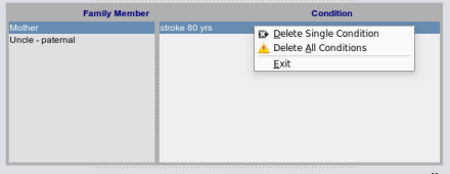
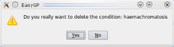
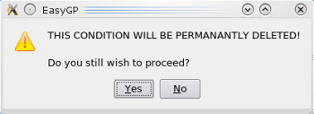
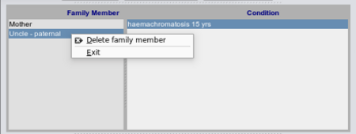

Delete Condition
You can choose to either delete a family members condition by clicking over the condition list:

In which case you will be receive the following prompts:

followed by a second chance to back out:

Should you wish to delete the entire family member and all their conditions in one hit, click the family members name and you will get a popup menu
over the members list:

Please note that after deletion there is no 'un-delete' to retrieve your information.